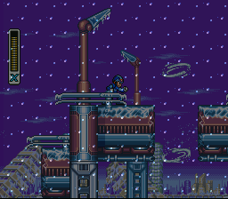
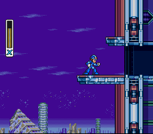
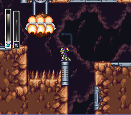
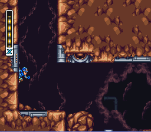
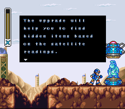
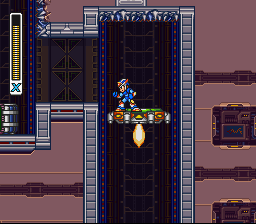
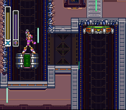
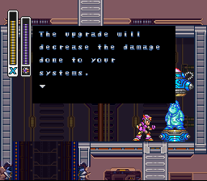
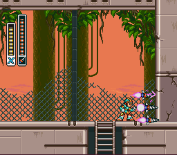
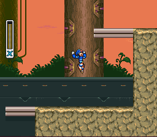

O que são os Upgrades de Armadura?
Durante sua jornada, X pode encontrar cápsulas deixadas pelo Dr. Light.
Cada cápsula oferece uma parte da armadura, que concede habilidades especiais — como:
- Botas que permitem dash(inclusive no ar, e vertical)
- Capacetes que mostram os upgrades das fases
- Peitorais que reduzem o dano do inimigo pela metade
- Canhões que melhoram o poder de ataque
Coletar os quatro upgrades transforma totalmente a jogabilidade e fortalece X para os desafios mais difíceis.


Blizzard Buffalo
Na área que neva, vá por cima. Continue indo até alcançar essa plataforma, só usar o dash no final da plataforma. DR. Light vai te entregar o upgrade das Botas



Tunnel Rhino
Olha! Uma pedra pendurada. Mas esta está no caminho. Derrube ela, usando o Triad T carregado o X dá um socão no chão derrubando a pedra. Escale, bem que lá em cima tem tesouro, O upgrade do capacete.



Volt Catfish
Ao chegar nesse ponto onde tem espetos no teto e uma saída a esquerda. Subindo nesse TROÇO, saque a G. Well, carregue até o Mega Man ficar roxo e dispare. O TROÇO vai subir e te levar a sala acima. A cápsula vai te entregar o upgrade do Peitoral


Neon Tiger
Da onde você pegou o Sub Tank, volte e suba as escadas. Caminhe pela direita e encontre uma parede toda quebrada, use o T. fang. Entrando na área, use o Dash vertical para alcançar a plataforma no fim da tela. Upgrade de tiro, Sempre bem-vindo.